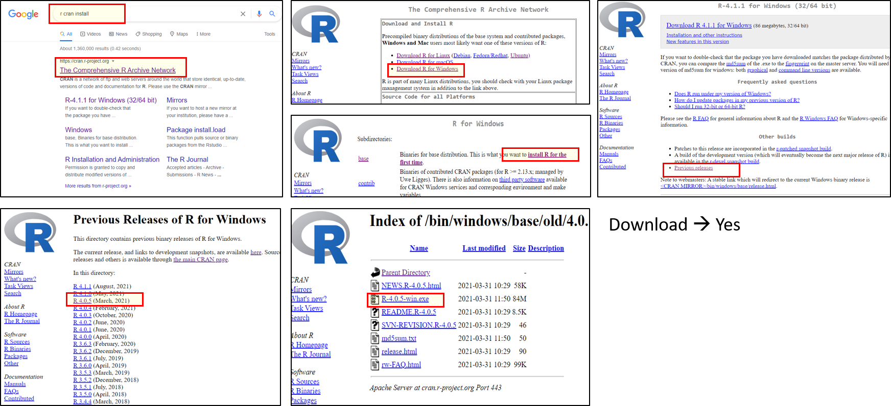

1 R & R studio 사용
본 실습에서 사용할 R와 R studio 를 설치하는 과정입니다.
여러 방법이 있지만 rstudio cloud 사용을 추천드립니다.
1.1 Rstudio Cloud
R studio cloud는 R과 R studio를 가장 빠르고 쉽게 사용할 수 있는 방법입니다. 다양한 옵션이 있으며, 무료 옵션도 포함되어 있습니다.
- Rstudio cloud 로그인 방법
- RStudio Cloud (Posit cloud) 에 접속합니다.
- 로그인을 합니다.
- New Project 를 실행합니다.
- 시작합니다.
1.2 R and R studio on Window system
여기에서는 Windows 시스템에서 R과 R 스튜디오를 설치하는 방법을 설명합니다.
- 구글에서 R cran을 검색하세요.
- 아래와 같은 사이트가 나타날 것입니다.
- R을 다운로드 및 설치하기를 클릭하세요.
- Windows용 R 다운로드하기
- Base → Install R for the first Time
- Download R * for Windows

1.2.1 R studio install
R 스튜디오 설치는 정말 쉽습니다. Rstudio 로 검색한 다음 아래의 사이트에 들어갑니다. https://posit.co/download/rstudio-desktop/
여기서 R studio 를 클릭해서 다운로드 후 설치하면 됩니다.
1.2.2 R studio 기본 창
소스 창에서 .R 스크립트를 열려면 “파일(File)” 메뉴로 가서 “새 파일(New File)”을 선택한 다음 “R 스크립트(R Script)”를 선택하면 됩니다.
R studio에 로그인 하면, 왼쪽에 script, consol 창이 있고, 오른쪽에는 Environmental, Files 창이 있습니다.
소스 창 (Source Pane) 기본적으로 왼쪽 상단에 위치하며, 스크립트를 편집, 실행, 저장할 수 있는 공간입니다. 스크립트는 실행하고자 하는 명령어를 포함하고 있습니다. 이 창은 데이터셋(데이터 프레임)도 표시하여 데이터를 확인할 수 있습니다. Ctrl + Enter (R) 을 통해서 실행합니다.
R 콘솔 창 (R Console Pane) R 콘솔은 기본적으로 왼쪽 하단이나 왼쪽에 위치하며, R의 “엔진” 역할을 합니다. 여기서 명령어가 실제로 실행되고, 비그래픽 출력 및 오류/경고 메시지가 표시됩니다. 명령어를 R 콘솔에 직접 입력하여 실행할 수 있지만, 스크립트에서 명령어를 실행하는 것과 달리 콘솔에 입력된 명령어는 저장되지 않는다는 점을 유의해야 합니다.
환경 창 (Environment Pane) 기본적으로 오른쪽 상단에 위치하며, 현재 세션에서 R 환경의 객체에 대한 간단한 요약을 볼 수 있습니다. 여기에는 가져오거나 수정한 데이터셋, 정의한 매개변수, 분석 중에 정의한 벡터나 리스트가 포함됩니다. 데이터 프레임 이름 옆의 화살표를 클릭하면 해당 데이터 프레임의 변수들을 볼 수 있습니다.
이 창에는 명령어 히스토리(History) 탭이 있어서 이전에 실행한 명령어를 확인할 수 있습니다. 또한 learnr 패키지를 설치하면 ‘튜토리얼’ 탭을 통해 인터랙티브 R 튜토리얼을 완료할 수 있습니다. ‘연결(Connections)’ 창을 통해 외부 연결을 관리할 수 있고, Git과 연결하면 ‘Git’ 창도 사용할 수 있습니다.
플롯, 뷰어, 패키지, 도움말 창 (Plots, Viewer, Packages, and Help Pane) 오른쪽 하단 창에는 여러 중요한 탭이 있습니다. 일반적인 그래픽 출력물, 예를 들어 지도 같은 플롯은 플롯(Plot) 탭에 표시됩니다. 인터랙티브하거나 HTML 출력물은 뷰어(Viewer) 탭에 표시됩니다. 도움말(Help) 탭에서는 문서와 도움말 파일을 볼 수 있습니다. 파일(Files) 탭에서는 파일을 찾아 열거나 삭제할 수 있습니다. 패키지(Packages) 탭에서는 R 패키지를 보고, 설치, 업데이트, 삭제, 로드/언로드할 수 있으며, 현재 설치된 패키지의 버전도 확인할 수 있습니다.
1.2.3 R studio project
R 스튜디오는 프로젝트 옵션을 제공합니다. 프로젝트는 데이터와 스크립트를 가져오고 내보내는 기본 경로를 만듭니다. 프로젝트를 공유할 때 협업이 쉬워집니다.
우수 project 폴더를 만듭니다. 그리고 이곳에 각각의 프로젝트를 설치할 것입니다.
- 프로젝트 생성하기
- Step 1: RStudio 상단 메뉴에서 File을 클릭한 후, New Project…를 선택합니다.
- Step 2: 새로운 창이 열리면, 아래의 옵션 중 하나를 선택할 수 있습니다:
- New Directory: 새로운 디렉토리(폴더)와 함께 새로운 프로젝트를 만듭니다.
- Existing Directory: 이미 존재하는 디렉토리(폴더)를 기반으로 프로젝트를 만듭니다.
- Version Control (Git 또는 SVN): Git이나 SVN과 연동된 버전 관리 프로젝트를 만듭니다. 이 옵션은 프로젝트를 Git 리포지토리와 연동하고 싶을 때 유용합니다.
- 새로운 프로젝트 만들기 (New Directory 선택 시)
- Step 3: New Directory를 선택한 경우, New Project나 특정 템플릿(예: R 패키지, Shiny 앱 등)을 선택할 수 있습니다. 일반적인 분석 프로젝트라면 New Project를 선택하면 됩니다.
- Step 4: 새로운 프로젝트에 사용할 디렉토리의 이름을 입력하고, - 디렉토리를 저장할 경로를 지정합니다.
- Step 5: 필요한 경우 Create a git repository를 선택하여 Git 버전 관리 기능을 프로젝트에 추가할 수 있습니다.
- Step 6: Create Project 버튼을 클릭하면, 새로운 프로젝트가 생성되고 해당 디렉토리 안에 작업 환경이 설정됩니다.
- 기본 폴더와 파일 생성하기
- .Rproj : R프로젝트 파일로, 일관된 작업을 보장하고, 사용자별 설정을 저장할 수 있습니다.
- data: 모든 원 또는 가공된 데이터 파일을 여기에 보관해야 합니다.
- rscript: 모든 r 스크립트가 저장되어 있어야 합니다.
- datastep.R: 데이터 정리, 변환 및 전처리를 합니다.
- analysis.R: 핵심 분석 방법(통계 테스트, 데이터 모델링 등)을 포함합니다.
- sources: 추가 스크립트 하위 폴더입니다.
- function.R: 서로 다른 스크립트에서 사용할 사용자 정의 함수를 정의해놓을 수 있습니다.
- results: plot, 테이블, 및 처리된 파일과 같은 모든 결과물을 여기에 저장합니다.
- manuscript: 프로젝트에 대해 작성 중인 보고서나 논문 초안, 메모 및 최종 버전을 저장합니다.
저는 또한 흔히 사용되는 기본 디렉토리를 권장합니다. 이것은 동료와 아이디어를 공유하는 또 다른 규칙입니다.
우리가 Windows 시스템을 사용하더라도 복사 및 이동과 같은 기본 명령은 코딩 프로세스를 용이하게 만드는 데 필요합니다. 아래 동영상을 보세요
네, 이제 R 코딩을 시작할 준비가 되었습니다.
1.3 R and R studio on Ubuntus
우분투스 서버에 R을 설치하는 과정입니다. 아마존, 구글클라우드등 서버에 설치할때 아래의 동영상을 따라해 주세요. 필요한 분만 하시면 됩니다. 여러 복잡한 과정이 있으니, 아래의 구글 docs를 보고 따라해 주세요.
참고 동영상
Google Doc
Google Doc Download